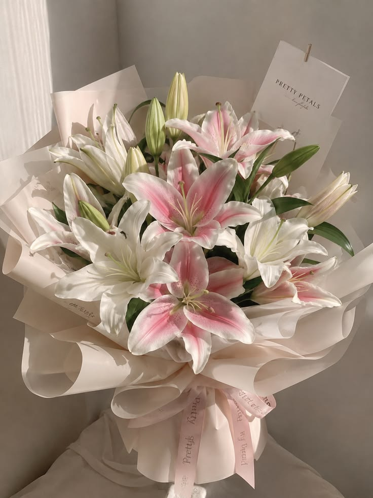
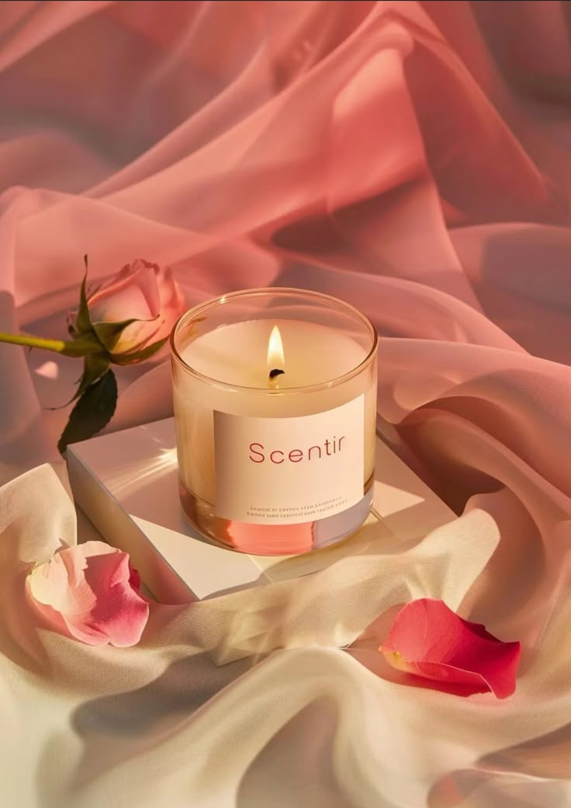

Thế Giới Quà Tặng Mang Tên Brenna
Brenna là nơi những đóa hoa thay lời muốn nói, những món quà lưu giữ yêu thương và những món phụ kiện tạo nên dấu ấn riêng của mỗi người.
Từ hoa tươi rực rỡ, quà tặng đầy bất ngờ đến những món phụ kiện nhỏ xinh, Brenna mong muốn mang đến cho bạn không chỉ một sản phẩm, mà còn là một cảm xúc, một kỷ niệm và một câu chuyện đáng nhớ.
Dù là một lời chúc, một dịp đặc biệt hay chỉ đơn giản là muốn tự thưởng cho bản thân, hãy để Brenna giúp bạn chọn điều phù hợp nhất với trái tim mình.
_Brenna – Trao món quà, gửi tâm tình._
Ngôn Ngữ Của Những Đóa Hoa
“Có những lời yêu thương chẳng thể nói thành câu, nhưng lại có thể gửi gắm qua một đóa hoa. Hãy cùng Brenna khám phá ngôn ngữ dịu dàng của những cánh hoa và tìm thấy loài hoa thay bạn kể nên câu chuyện của riêng mình.”
 01
01
Hoa Hồng
Rosa · Rose
Có những lời yêu thương thật khó để nói thành lời. Từ lâu, hoa hồng đã trở thành biểu tượng của tình yêu, sự lãng mạn và những cảm xúc chân thành.
Sắc đỏ nồng nàn gợi nhắc về một tình yêu mãnh liệt, trong khi những sắc hồng dịu dàng mang theo sự quan tâm và ngọt ngào. Một bó hoa hồng đôi khi chính là cách giản dị nhất để nói rằng: bạn rất đặc biệt.
"Có những điều trái tim muốn nói, hãy để hoa hồng thay lời."Khám phá hoa hồng →
 02
02
Hoa Tulip
Tulipa · Tulip
Không quá cầu kỳ, hoa tulip chinh phục lòng người bằng những cánh hoa mềm mại và dáng vẻ thanh lịch. Loài hoa này thường gợi lên tình yêu chân thành, niềm hy vọng và những khởi đầu mới.
Tulip phù hợp để dành tặng một người bạn quý mến, chúc mừng một hành trình mới hoặc gửi lời động viên đến người đang theo đuổi ước mơ của mình.
"Mỗi khởi đầu đều xứng đáng với một đóa hoa tươi."Khám phá hoa tulip →
 03
03
Hoa Mẫu Đơn
Paeonia · Peony
Với những lớp cánh hoa xếp chồng đầy đặn, mẫu đơn mang vẻ đẹp kiêu sa, mềm mại và quyến rũ. Trong nhiều nền văn hóa, loài hoa này còn gắn liền với sự sung túc, thịnh vượng và hạnh phúc viên mãn.
Mẫu đơn là lựa chọn dành cho những dịp đặc biệt, khi bạn muốn gửi đi lời chúc tốt đẹp và thể hiện sự trân trọng dành cho người nhận.
"Vẻ đẹp không cần phô trương vẫn có thể khiến người ta nhớ mãi."Khám phá hoa mẫu đơn →
 04
04
Hoa Tú Cầu
Hydrangea
Hàng trăm bông hoa nhỏ kết thành một khối hoa tròn đầy đặn, như những mảnh ghép tạo nên một điều hoàn chỉnh. Tú cầu thường gợi nhắc về lòng biết ơn, sự chân thành và những mối quan hệ gắn bó.
Một bó tú cầu có thể thay bạn gửi lời cảm ơn, lời xin lỗi hoặc nhắn nhủ rằng sự hiện diện của một người luôn mang ý nghĩa đặc biệt.
"Điều đẹp đẽ nhất là khi những điều nhỏ bé cùng tạo nên yêu thương."Khám phá hoa tú cầu →
 05
05
Hoa Hướng Dương
Helianthus · Sunflower
Mang sắc vàng rực rỡ như ánh nắng, hướng dương tượng trưng cho niềm tin, sự lạc quan và tinh thần luôn hướng về những điều tốt đẹp.
Nếu có ai đó đang cần thêm động lực, một bó hướng dương sẽ là món quà ấm áp. Hoa cũng rất thích hợp để chúc mừng thành công, sinh nhật hoặc khởi đầu một hành trình mới.
"Hãy luôn tìm kiếm ánh sáng ngay cả trong những ngày nhiều mây."Khám phá hoa hướng dương →
 06
06
Hoa Baby
Gypsophila · Baby's Breath
Nhỏ bé, mong manh và dịu dàng, hoa baby thường được yêu thích bởi vẻ đẹp tự nhiên, tinh khôi. Những chùm hoa li ti còn gợi lên tình cảm thuần khiết và sự quan tâm bền bỉ.
Baby có thể đứng riêng thành một bó hoa nhẹ nhàng hoặc kết hợp cùng hoa hồng để tạo nên món quà lãng mạn dành cho người thương.
"Không cần rực rỡ nhất, chỉ cần đủ dịu dàng để được nhớ đến."Khám phá hoa baby →

07Hoa Ly
Lilium · Lily
Hoa ly gây ấn tượng bởi dáng hoa thanh thoát, những cánh hoa nổi bật và hương thơm đặc trưng. Tùy theo màu sắc và văn hóa, hoa ly có thể tượng trưng cho sự thanh cao, lòng trân trọng và vẻ đẹp tinh tế.
Đây là loài hoa phù hợp để dành tặng người thân, gửi lời chúc mừng hoặc trang trí không gian bằng nét đẹp trang nhã.
"Vẻ đẹp tinh tế luôn để lại dấu ấn theo cách riêng."Khám phá hoa ly →
Để Hoa Thay Lời Muốn Nói
“Mỗi đóa hoa mang một ý nghĩa, mỗi món quà gửi trao một tấm lòng. Mong rằng bạn sẽ tìm thấy ở Brenna một đóa hoa đủ đẹp để trao đi, và đủ chân thành để được nhớ mãi.”
Khám phá tất cả sản phẩm →Quà Nhỏ, Yêu Thương Lớn
“Đôi khi, hạnh phúc bắt đầu từ những điều thật nhỏ bé. Một món quà được chọn bằng cả tấm lòng có thể thay lời quan tâm, lưu giữ một kỷ niệm và khiến ngày bình thường trở nên thật đặc biệt.”
 01
01
Gấu Bông
Teddy Bear
Có những cái ôm không thể trao đi mỗi ngày, và một chú gấu bông có thể thay bạn gửi gắm sự ấm áp ấy. Mềm mại, đáng yêu và gần gũi, gấu bông luôn là món quà khiến người nhận cảm thấy được quan tâm.
Một món quà dành cho người thương, bạn bè hoặc bất kỳ ai mà bạn muốn mang đến niềm vui.
"Gửi một chút dịu dàng, giữ lại một chút ấm áp."Khám phá gấu bông →
 02
02
Nước Hoa
Perfume
Một mùi hương có thể gợi nhớ về một người, một nơi chốn hay một khoảnh khắc đặc biệt. Nước hoa mang vẻ đẹp tinh tế, giúp mỗi người thể hiện phong cách và dấu ấn riêng.
Đây là món quà thích hợp dành cho những người yêu thích sự thanh lịch và muốn lưu giữ những kỷ niệm qua từng mùi hương.
"Mỗi khởi đầu đều xứng đáng với một đóa hoa tươi."Khám phá nước hoa →

03Nến Thơm
Paeonia · Peony
Sau một ngày dài, một góc phòng ấm áp cùng ánh nến dịu nhẹ có thể mang đến cảm giác thư thái và bình yên.
Nến thơm là món quà dành cho những người yêu thích không gian đẹp, những phút giây nghỉ ngơi và sự chăm sóc bản thân.
"Vẻ đẹp không cần phô trương vẫn có thể khiến người ta nhớ mãi."Khám phá nến thơm →
Gói Trọn Yêu Thương Trong Một Món Quà
“Giá trị của món quà không nằm ở sự lớn lao, mà ở tình cảm người trao gửi gắm. Hãy để Brenna giúp bạn chọn một món quà nhỏ, viết nên một kỷ niệm đẹp trong lòng người nhận.”
Khám phá tất cả sản phẩm →Phụ Kiện Mang Dấu Ấn Riêng
“Phong cách không chỉ được tạo nên từ những điều lớn lao, mà còn nằm trong từng chi tiết nhỏ. Một món phụ kiện phù hợp có thể tôn lên nét riêng, thể hiện cá tính và lưu giữ những điều khiến bạn trở nên khác biệt.”
 01
01
Kẹp Tóc
Hair Accessories
Một chiếc kẹp tóc nhỏ xinh có thể làm nổi bật mái tóc và hoàn thiện vẻ ngoài của bạn. Từ nét dịu dàng đến phong cách trẻ trung, mỗi kiểu kẹp đều có nét cuốn hút riêng.
Không chỉ là món phụ kiện tiện dụng, kẹp tóc còn là món quà nhỏ dành cho những người yêu thích làm đẹp.
"Vẻ đẹp đôi khi bắt đầu từ những điều giản đơn."Khám phá kẹp tóc →
 02
02
Móc Khóa
Keychain
Một món đồ nhỏ có thể mang theo bên mình mỗi ngày, gắn liền với những kỷ niệm hoặc một người đặc biệt.
Móc khóa phù hợp làm quà tặng bạn bè, quà lưu niệm hoặc món đồ nhỏ thể hiện sở thích và cá tính của chính bạn.
"Một món quà nhỏ, một kỷ niệm dài lâu."Khám phá móc khóa →
 03
03
Vòng tay
Bracelet
Vòng tay là món phụ kiện tinh tế giúp điểm tô cho đôi tay và thể hiện phong cách của người đeo. Mỗi kiểu dáng có thể mang một nét cá tính khác nhau.
Khi được trao tặng, vòng tay còn có thể trở thành món quà lưu giữ tình bạn, sự gắn kết hoặc một kỷ niệm đáng nhớ.
"Có những kết nối không cần nhìn thấy vẫn luôn hiện hữu."Khám phá vòng tay →
 04
04
Dây Chuyền
Necklace
Một sợi dây chuyền thanh mảnh có thể làm nổi bật vẻ đẹp tự nhiên và tạo điểm nhấn cho trang phục. Sự tinh tế nằm trong những chi tiết không cần quá cầu kỳ.
Dây chuyền cũng là lựa chọn quà tặng ý nghĩa dành cho những dịp sinh nhật, kỷ niệm hoặc những ngày muốn dành cho ai đó một điều thật đặc biệt.
"Giữ một chút lấp lánh bên mình mỗi ngày."Khám phá dây chuyền →
Vẻ Đẹp Bắt Đầu Từ Chính Bạn
“Không cần giống bất kỳ ai, bởi nét đẹp riêng luôn là điều đáng trân trọng nhất. Mong rằng mỗi món phụ kiện từ Brenna sẽ trở thành một điểm nhấn nhỏ, giúp bạn tự tin thể hiện chính mình.”
Khám phá tất cả sản phẩm →